Precalculus is not as scary as it may seem. Do not worry. We got you :D
For the trigonometry formulas, please refer to the Trigonometry Page
Domains and Graphing Basics
Coordinate Plane Quadrants
Distance Formula
Finds the distance between two points on a coordinate plane
The distance formula is also the pythagorean therom.
The distance between two points is the hypotenuse of a right triangle.
Midpoint Formula
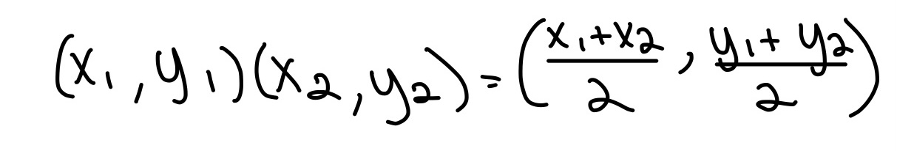
Finds the middle point in between two points on a coordinate plane
Dividing by two finds the center x and y point
Intercepts
x-intercepts: let y = 0 and solve for x
y-intercepts: let x = 0 and solve for y
PLEASE write intercepts in coordinate form! Ex. (0, 5)
Symmetry
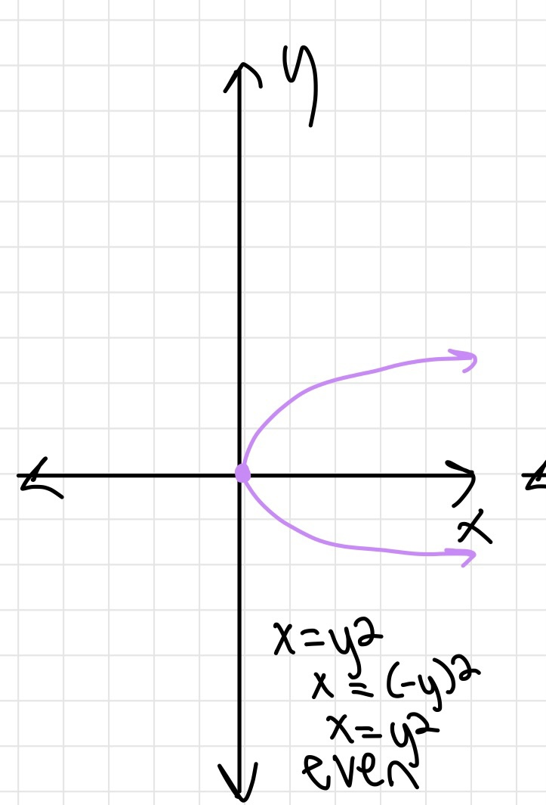
x-axis Symmetry
One half of the graph is the same as the other half
Opens horizontally
Even exponent on the y value
Ex. x = y4 - 3
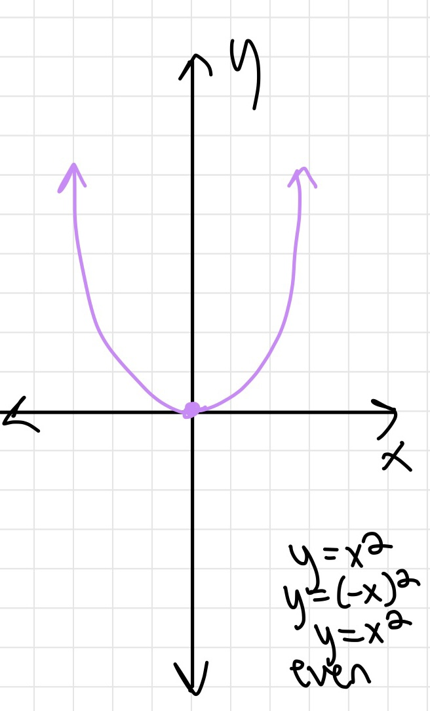
y-axis Symmetry
One half of the graph is the same as the other half
Opens vertically
Even exponent on the x value
Ex. y = x2 + 4
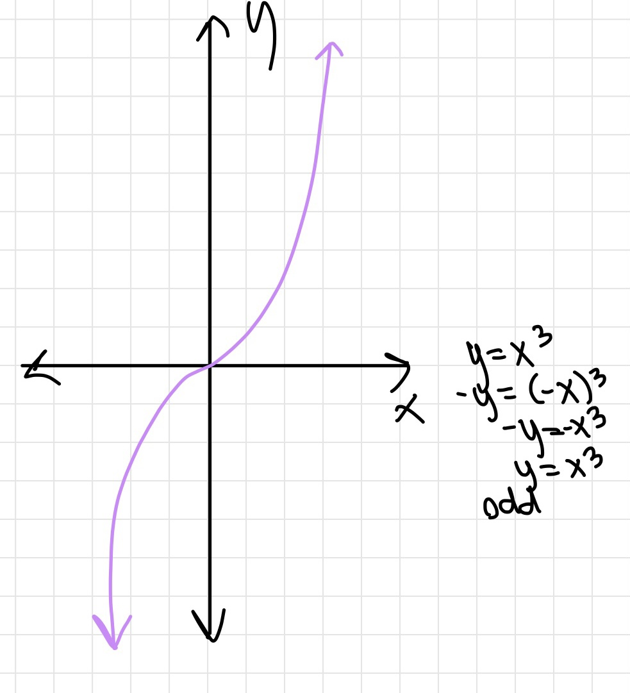
Origin Symmetry
Replacing y with -y and x with -x creates the same equation
Most likely has an odd exponent
Ex. y = x5
Equation of a Circle
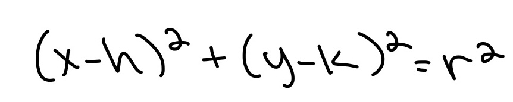
Center = (h,k)
Radius = r
Find the midpoint of the circle using two points to find the center
Distance from a point and the center is the radius
Slope
AKA average rate of change
rise/run
m = (y2 - y1)/(x2-x1)
Slope-Intercept Form
y = mx + b
m = slope
b = y-intercept
Point Slope Form
y - y1 = m(x - x1)
The same as Slope-Intercept Form
Use a point and the slope to find the slope-intercept form of the slope
Standard Form
ax + by = c
Can convert into slope-intercept form
Parallel & Perpendicular Lines
Parallel lines
Both slopes have the same slope (m)
Ex. y = 2/3x + 1 and y = 2/3x + 4
Perpendicular lines
Both slopes have an opposite value and reciprocal of each other
Ex. y = 2/3x + 1 and y = -3/2x - 7
Interval Notation
(___, ____)
The domain DOES NOT include the x values
If the coordinate is part of a graph, leave a hole in the coordinate
[___, ____]
The domain includes the x values
(___, ___] or [___, ____}
The respective x values will be included/not included
Crit Numbers
Values of x that make the equation = 0 or undefined
Used when figuring out the domain of a function
Create a number line that shows the restricted domains for the function.
Examples
[-3, 3] is equivalent to -3 <= x <= 3
(-4, 4] is equivalent to -4 < x <= 4 (does not include -4 in the domain)
Even and Odd Functions
Even: f(-x) = f(x) (not a function)
Odd: f(-x) = -f(x) (origin symmetry)
Odd: -f(-x) = f(x) (origin symmetry)
For all Common to the Domains of f and g
(f +- g) = f(x) += g(x)
(fg)(x) = f(x) · g(x)
(f/g)(x) = f(x)/g(x), g(x) is not equal to 0
(f composition of g)(x) = f(g(x))
Inverse Functions
IS NOT 1/f
Swap x and y then solve for y to find the inverse function
If you are trying to find the inverse of a parabola, make sure to find the restriction
Restriction: prevents the graph from going beyond a part of the graph
Reason: If an x value goes beyond the restriction, the y value will be no solution in the original function
Ex. x >= -2 prevents the graph from going lower than (-2, y)
Ex. The inverse of f(x) = (√x + 1) - 2 is f(x) = (x+2) 2 - 1. The restriction is x > -2. If x = -2, the original equation will be √-1 - 2 which is no solution
Polynomials
Parabola Functions
Quadratic form: ax2 + bx + c
Standard form: f(x) = a(x - h)2 + k
Vertex in standard form: (h, k) (when k = y and h = x)
Vertex in quadratic form: (-b/(2a), f(-b/(2a)))
Polynomials of the Higher Degree (Exponent)
When the leading coefficient's exponent is even, it is a symmetrical function
When the leading coefficient's exponent is odd, it is an odd function
End behavior: graph goes up/down
Exponent - 1 = turning points (amount of times the graph changes from up to down or vice versa)
Multiplicity: how many times each value of x is multiplied in an equation
Division of Polynomials
For dividing equations such as x3 - 1, DO NOT forget to include the missing degrees (2 and 1) 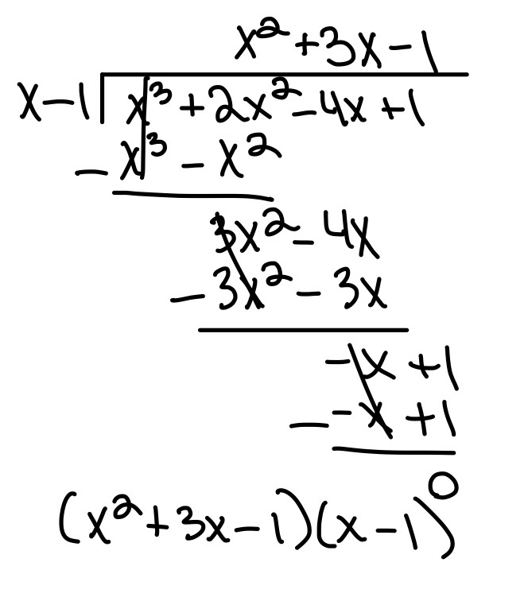
DO NOT forget to use the remainder in the answer. Put the remainder over the divisor in fraction form and add it to the final answer
Synthetic division: 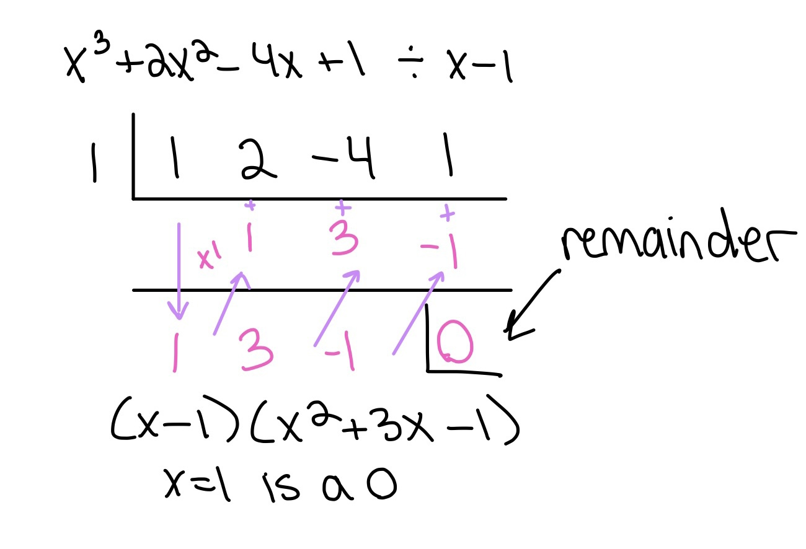
Intermediate Theorem
Goal: find the rational 0s of a polynomial
Possible rational 0: values of x that could make the equation equal to 0
For convenience: pr0 = possible rational 0
If a pr0 provides a -remainder and another pr0 provides a +remainder, the actual rational 0 will be a value in between them
Ex. 1 and 3 are pr0s. 1 = -8 as a remainder and 3 = 48 as a remainder; 2 is the rational 0 in between 1 and 3 that will produce a remainder of 0
Imaginary numbers
i = √-1; i2 = -1
Complex conjugates: a + bi and a - bi
Ex. the complex conjugate of 2 - 3i is 2 + 3i
Multiply by the complex conjugate of an imaginary fraction to simplify it
Descartes Rule of Signs
Trick to find the amount of real 0s in a polynomial function
Number of sign changes in the function - 2 = number of POSITIVE real 0s
Number of real 0s could be the amount of sign changes as well
f(-x) sign changes in the function = number of NEGATIVE real 0s
Asymptotes of Rational Functions
Holes
Place where x has no y value because it is undefined
If the same binomial is in the numerator and denominator, the x value is the x for the hole. The binomials cancel out.
Plug in the x value to find the y value of the hole
Verticle asymptote
X value that makes the denominator 0 (binomial that is not the hole)
Horizontal asymptote
HA: horizontal asymptote
If the numerator's degree > denominator's degree, HA: y = 0
If the numerator's degree = denominator's degree, HA: y = num degree / den degree
If the numerator's degree < denominator's degree, there is no HA
Slant Asymptote
Quotient of polynomials without the remainder
Logarithms, Exponentials, and Compound Interest
Exponentials
f(x) = a · bx-h + k
Has a horizontal asymptote
Focal point: first integer point closest to HA
a: distance between focal point and horizontal asymptote (+ = focal point is above HA, - = focal point is below HA)
Logarithms
log: log10
ln: loge
logan = x is the same as ax = n
logan = x is the same as ln n / ln a = x
Compound Interest
For n compoundings per year
A = P(1 + r/n)nt
P = principal/initial value for investment
r = annual interest rate
t = years
n = number of compoundings per year
Continuous Compounding
A = Pert
Exponential growth/decay
y = aebx
Speed and Revolutions
Radians and Degrees
Degrees
θ = theta
Positive angles: counterclockwise
Negative angle: clockwise (add 360 to find the positive angle)
Coterminal: two different angles are in the same position on the coordinate plane
Radians
s/r = θ
r = radius
s = distance between angle 0 and angle θ
One rotation (circumference of a circle): C = 2πr
Speed
Linear Speed
V = s/t
Total DISTANCE the object moving in a circular arc will go
t = time
s = length of the arc
Angular Speed
W = θ/t
Total SPEED the object moving in a circular arc will go
The length/distance between the initial point and terminal point
||v||
Standard Position
Initial point is at (0,0)
Component form: terminal - initial <v1, v2> (initial point is now (0,0))
Component form for a vector in standard position: <terminal point>
Finding the magnitude in component form (same as the distance formula):
Unit Vectors
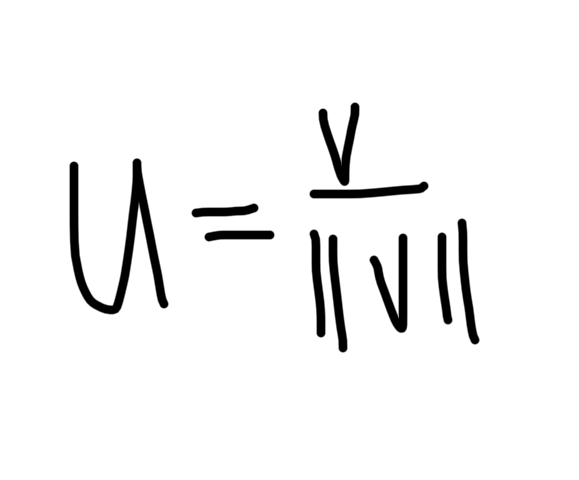
Finds a vector with a magnitude of 1 that goes in the same direction as the vector used in the formula
V = component form of a vector
||v|| = the magnitude of a vector
Multiply the unit vector by a number to get a vector with a specific magnitude in the same direction as V
Linear Combination of i and j
<v1, v2> → v1i + v2j
Direction angle:
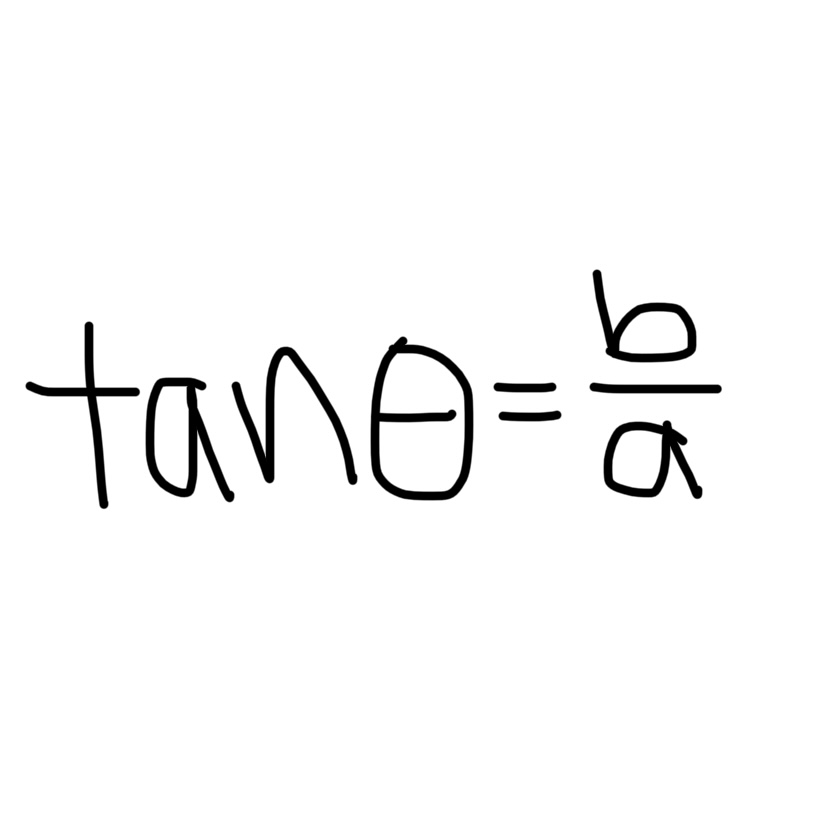
If asked to find the component form of a vector given the magnitude and direction, make a right triangle with the vector and use sin and cos to find the x and y of the terminal point
i = cos (horizontal) j = sin (verticle)
Resultant
Resultant of u and v is u + v
Dot Product
u · v = u1v1 + u2v2
Angle between vectors u and v:
Orthogonal Vectors: u · v = 0
Solving Systems of Equations with Matrices
Matrix
Augmented Matrix
Matrices
Way to express a system of linear equations. Only the coefficient in present
Augmented Matrices: A matrix with the answer to each system on the right side. It is separated by 3 vertical dots or a line.
Whenever you change one side, you change the other.
Forms for Matrices and Systems of Linear Equations
Row-Echelon Form: x, y, and z, have a coefficient of 1. Solve by back substitution.
Gaussian Elimination = row-echelon form
Reduced Row-Echelon Form: x, y, and z are already clearly solved and have a coefficient of 1.
Gauss-Jordan Elimination = Reduced Row Echelon Form
Back Substitution: Plug in z in the y equation then plug in z and y into the x equation
Reduced Row Echelon Form
Inverse of a Square Matrix
Make an augmented matrix where the right side is equal to a reduced row echelon form
Make the left hand side into a reduced row echelon form.
The right hand side will be the inverse matrix
Determinants
2x2
Cross multiply a · d and b · c
Subtract the product of ad from bc
Terms (needed for 3x3 and greater)
Refer to this section for the 3x3 section
Minor: determinant of a matrix with a row and column crossed out
Cofactor: a minor that changes signs depending on where it is in the original matrix. Refer to the image above.
3x3
Pick one row of the matrix to cross out
Make 3 2x2 matrices by crossing out one different column for each matrix. The 4 remaining values are the 2x2 matrix
Solve for each matrix's determinant (minors). You will have 3 minors
Change the 3 minors to cofactors accordingly
Add all the cofactors together to get the determinant of the matrix
Cramer's Rule
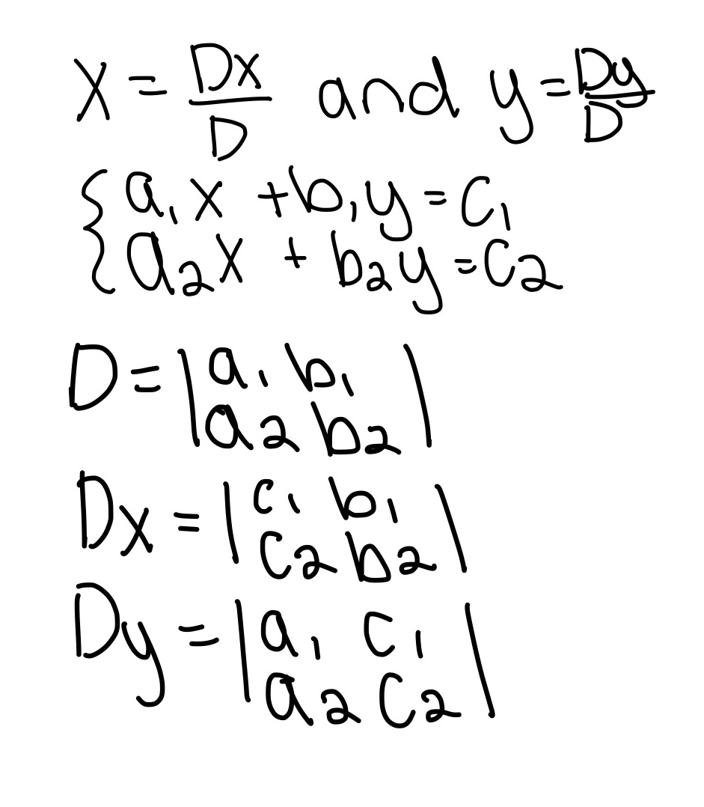
Way to find the x and y of a system of linear equations
Find the determinant of D, Dx, and Dy then use the formulas above to find x and y (x, y)
Probability
Factorials
Represented by n!
Multiply by every number leading up to n
Ex. 5! = 1 · 2 · 3 · 4 · 5
Used for combinations and permutations
Notes
Use these notes when assessing how to solve the probability of a scenario
Adding (+): you have a choice/or
Multiplying (·): calculate probability/and
n = total amount of items in a scenario (refer to the two images below)
r = amount of positions/number of objects to choose (refer to the two images below)
Permutation
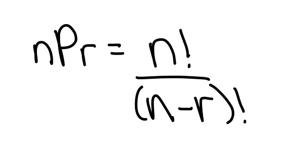
Use permutations when the order in a scenario matters
Ex. How many ways can a group of people come in 1st, 2nd, and 3rd place
Combination
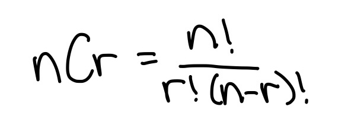
Use combinations when the order in a scenario DOES NOT matter
Ex. Pick 4 meals out of a menu with a total of 15 meals
Sample Space
Set of all possible outcomes
Probability of an Event (fraction/percentage)
n(e) = the event
n(s) = sample space
p(e) = probability of an event
Ex. What is the probability of flipping heads on a coin? 1 (event)/2 (total possible outcomes: heads or tails)
Mutually Exclusive Events
Two events from the same sample space have no common outcomes
Use addition to solve the probability of the event.
Independent Events
2 events are independent. The occurance of one event has no effect on the other
Use multiplication to solve the probability of the event.
Arithmetic and Geometric Sequences
n
Represents the term of a number in a sequence. Essentially where the number is in a sequence.
Summation Notation
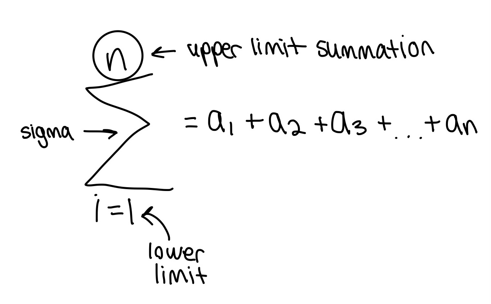
Easy way to write a summation of a sequence
n = the amount of times the right side is added to itself (represents the last term of the sequence)
i = contributes to the amount of times the right side is added to itself (represents the first term of the sequence)
If i does not equal 1, the sequence starts at another place in the sequence
Infinite Sequence
A sequence that goes on infinitely. n = infinity
Partial sum: a limit (n) is set on the infinite sequence.
Infinite series: sum of all terms in an infinite series
Arithmetic sequences
Finds the nth term of a sequence. Has LINEAR nth term rules (addition/subtraction).
d = common difference (pattern in the sequence). Ex. add 6 for each term
The bottom formula is the same as point slope form
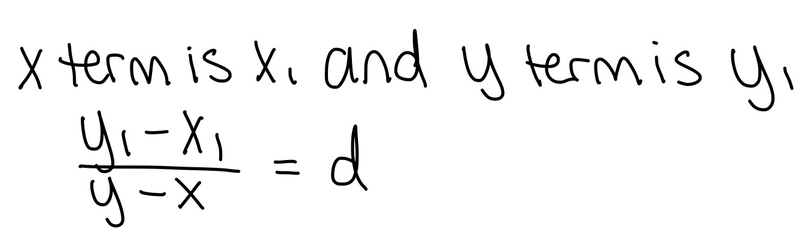
Used to find d in an arithmetic sequence. You can use d to find the arithmetic equation of the sequence
Same formula used to find the slope of a line
Numerator: subtract the two numbers
Denominator: the subtraction of the nth term of both numbers
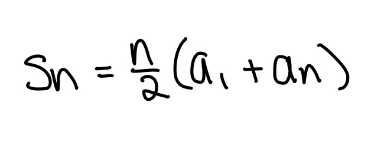
Efficient way to find the sum of the first n terms of an arithmetic sequence
Geometric Sequences
Finds the nth term of a sequence. Has EXPONENTIAL nth term rules (addition/subtraction).
d = common difference (pattern in the sequence). Ex. add 6 for each term
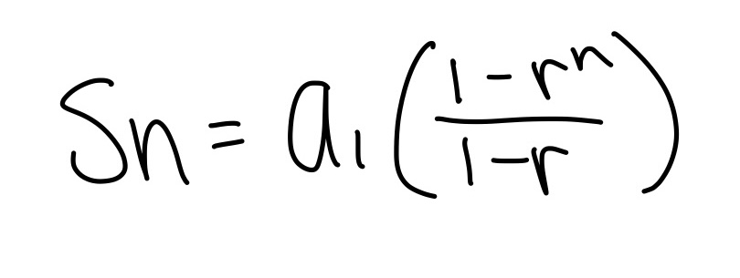
Finds the sum of the first n terms of a geometric sequence
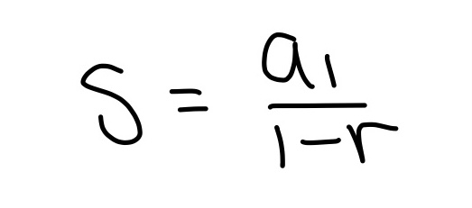
Finds the sum of an infinite geometric series
Binomial Theorem
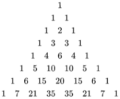
Use the triangle above to expand a binomial by its respective exponent
Multiply each term in the expansion according to the triangle